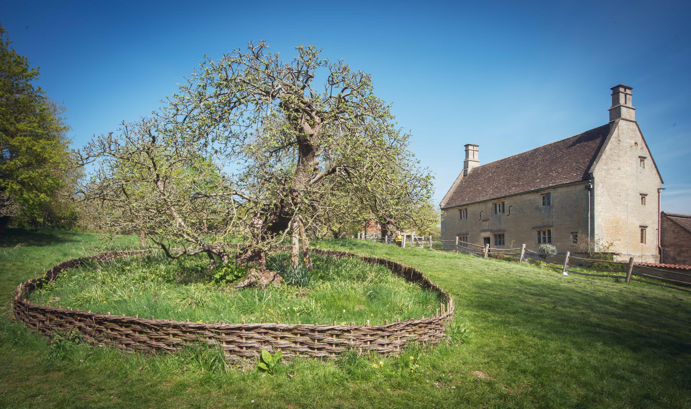

About Me

I was born on January 4, 1643, in Woolsthorpe, England. My curiosity about the natural world led me to explore mathematics, optics, and motion. Over the years, I formulated laws that would shape modern science. Let me take you through my journey!